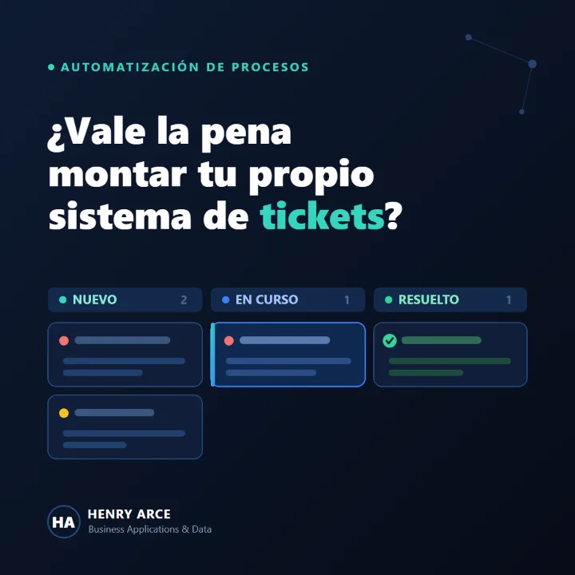
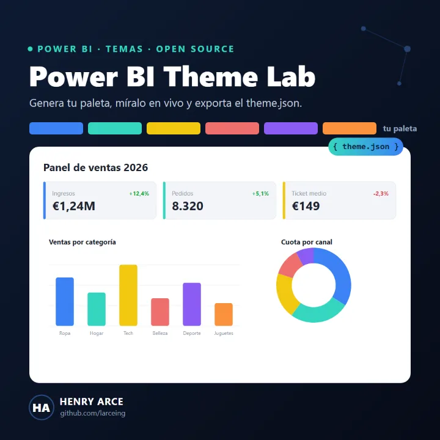
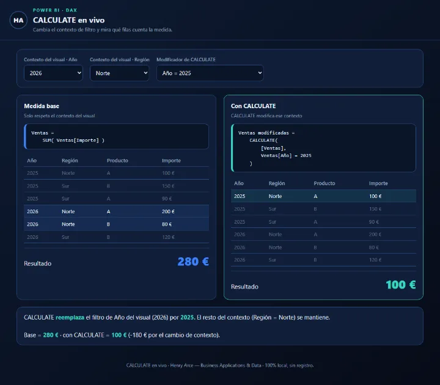
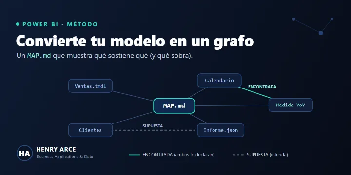
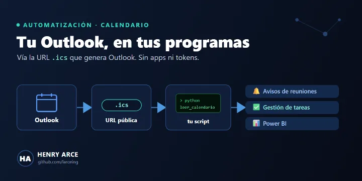
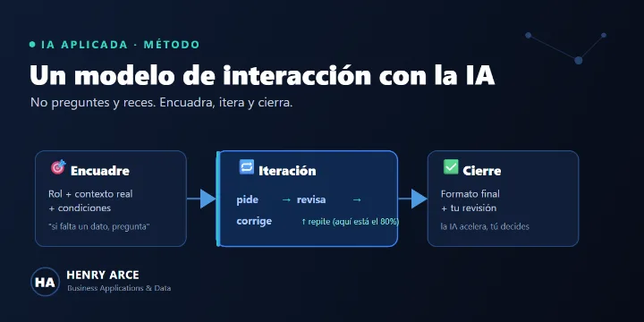

Automatización e integraciones
Analizo cómo trabaja un equipo, encuentro lo que se repite y lo convierto en un flujo que conecta herramientas, datos y personas.
- Python, Power Automate y Apps Script
- API REST, webhooks y EDI
- ERP, CRM y ecommerce
Automatización · IA aplicada · Datos
Soy Henry Arce. Encuentro las tareas manuales de un equipo y las convierto en flujos, asistentes e informes, y luego mido lo que se gana. Conozco el negocio por dentro: ERP, CRM, ecommerce y BI, desde 2019.
Abierto a proyectos y a nuevas conversaciones
Qué hago
Lo habitual es que la automatización, la IA y los datos vivan en equipos distintos. Yo trabajo en el punto donde se tocan, y por eso puedo llevar una mejora desde la idea hasta que el equipo la usa.
Analizo cómo trabaja un equipo, encuentro lo que se repite y lo convierto en un flujo que conecta herramientas, datos y personas.
Asistentes y agentes que resuelven una tarea concreta con los datos de la empresa, con prompts y bases de conocimiento que se pueden mantener.
Modelo los datos y construyo informes que la gente usa de verdad, y con ellos mido si una mejora ha servido para algo.
Cómo trabajo
Me siento con el equipo y sigo el proceso real, no el del manual.
Decido qué se automatiza, qué resuelve una IA y qué debe seguir haciendo una persona.
Flujos, integraciones y asistentes, probados con casos reales antes de soltarlos.
Tiempo ahorrado, errores evitados y calidad de lo que hace la automatización.
Documentación clara y formación para que el equipo lo adopte y lo mantenga.
Proyectos
Trabajo real, contado como problema, solución y resultado. En los proyectos para empresa no aparecen datos ni cifras del cliente.

Producto propio · 2026
Para Grupo SPSIL · 2026
Producto propio · en desarrollo
Producto propio · app web
Aplicación personal para perder peso con criterio: genera el plan semanal a partir de un catálogo de más de 500 alimentos ajustado al objetivo de calorías, construye la lista de la compra con lo elegido y aprende de lo que marcas como "me gustó". Cada decisión de diseño queda en un registro de cambios.
Para Grupo SPSIL · en desarrollo
Un asistente que responde preguntas de negocio consultando el ERP en solo lectura. Cada tipo de consulta es una función cerrada; el modelo elige cuál usar y con qué parámetros, así no inventa datos. Se apoya en fichas de negocio editables que explican cómo se calcula cada cosa, y responde en texto o en Excel.
Para Grupo SPSIL · 2025–2026
Informes de Power BI sobre el ERP para dirección, comerciales y compras. Tras un cambio de red que cortó los orígenes, migré los procesos a Dataflows y Lakehouse en Microsoft Fabric. Cada cambio en una vista va con su copia, su script de vuelta atrás y una comprobación de antes y después.
Para Grupo SPSIL · escritorio
Aplicación de escritorio que genera un informe de ofertas por cliente y familia directamente desde SQL Server o el Lakehouse. El cálculo se hace en la base de datos para no cargar el equipo, con filtros, exportación a Excel y pruebas automáticas.
Para un comercio · tienda online
Tienda para un negocio de serigrafía: catálogo, carrito y compra, con un panel de administración a medida para gestionar productos y pedidos. Todo arranca con un solo comando gracias a Docker.
En ES Group · 2026
Herramientas internas para dos plantas de producción: sistema de helpdesk propio para el soporte, control horario, seguimiento de costes de IT e integración de la facturación entre plantas del grupo.

Open source · herramienta web
Generador de temas para Power BI en el navegador: eliges tu color de marca, ves la paleta sobre un panel en vivo, compruebas el contraste y exportas el theme.json.

Open source · herramienta web
Página interactiva para entender la función más potente y más confusa de DAX: cambias el contexto de filtro y ves, fila a fila, qué cuenta la medida y qué modifica CALCULATE.

Open source · método
Cuatro pasos y cuatro prompts para que una IA lea tu modelo y dibuje su grafo de dependencias: qué medidas lo sostienen, cuáles no usa nadie y qué conexiones no se ven a simple vista.

Open source · Python
Conecta tu calendario de Outlook a tus propios programas con un enlace y un script sin dependencias. Sin API de Microsoft, sin registrar aplicaciones y sin tokens.

Open source · guía
Una forma de trabajar con la IA como colaborador y no como buscador: encuadre, iteración y cierre, con plantillas pensadas para DAX, Power Query y documentación.
Open source · PowerShell
Dos scripts para auditar un tenant de Power BI con tu propio inicio de sesión: a cuántos informes tienes acceso de verdad y qué conjuntos de datos están fallando al refrescar.
Open source · plantilla
Plantilla para que un equipo defina cómo se usa la IA al revisar o construir proyectos: unas reglas que nadie puede saltarse y dos bucles de mejora que aprenden de cada caso real.
Open source · Power BI
Informe de Power BI con datos de ejemplo para decidir a qué clientes y zonas dedicar el tiempo del equipo comercial, con un script de Python que regenera los datos.
Open source · manual
Manual paso a paso en español para instalar NiFi en Windows y montar un primer pipeline en veinte minutos, pensado para analistas que vienen de Power BI y Power Query.
Más utilidades en GitHub: python_code (análisis financiero y de negocio) y m_snippets (fragmentos de Power Query).
Trayectoria
Empecé a los 16 trasteando con Arduino. En consultoras aprendí método y a documentar; en la industria aprendí qué significa que un dato esté mal un lunes a las ocho.
Abr 2026 – actualidad
Responsable de los ERP del grupo para dos plantas de producción. Integraciones con SAP, lectura de datos de máquinas, EDI, un helpdesk propio, control horario y costes de IT, y soporte a la migración a Azure.
Ene 2025 – mar 2026
Análisis de datos, automatización y desarrollo para un fabricante: Microsoft Fabric para centralizar y gobernar el dato, Power BI para dirección y comerciales, y aplicaciones de escritorio en Python para logística y aprovisionamiento.
Nov 2023 – jul 2024
Área de innovación y transformación digital: ETL y almacenes de datos, informes en Power BI y Excel, e indicadores de proveedores (SLA, disponibilidad, MTBF, MTTR) con su documentación funcional y técnica.
Feb 2022 – nov 2023
Soluciones de BI para el sector bancario: cuadros de mando de indicadores financieros y operativos, procesos ETL e integración de datos desde Azure Databricks, AWS, SharePoint y Oracle.
Sep 2019 – feb 2020
Primeros proyectos por cuenta propia: paneles de ventas, inventario y producción, y automatización de informes con Python y macros de Excel.
2020 – 2022
IES El Palmeral · nota media 8,8
Reconocimientos
Y premiado en el campeonato CV Skills 2021, modalidad de Electrónica.
Tecnologías
Divulgación
Escribo en LinkedIn sobre BI e IA aplicada, siempre con algo que se pueda copiar y usar. Estas son las publicaciones que más recorrido tuvieron.
139.760
impresiones
51.431
impresiones
29.131
impresiones
Contacto
Si en tu equipo hay tareas que se repiten cada semana, datos que no cuadran o ganas de usar IA en algo concreto, cuéntamelo. También estoy abierto a propuestas profesionales.